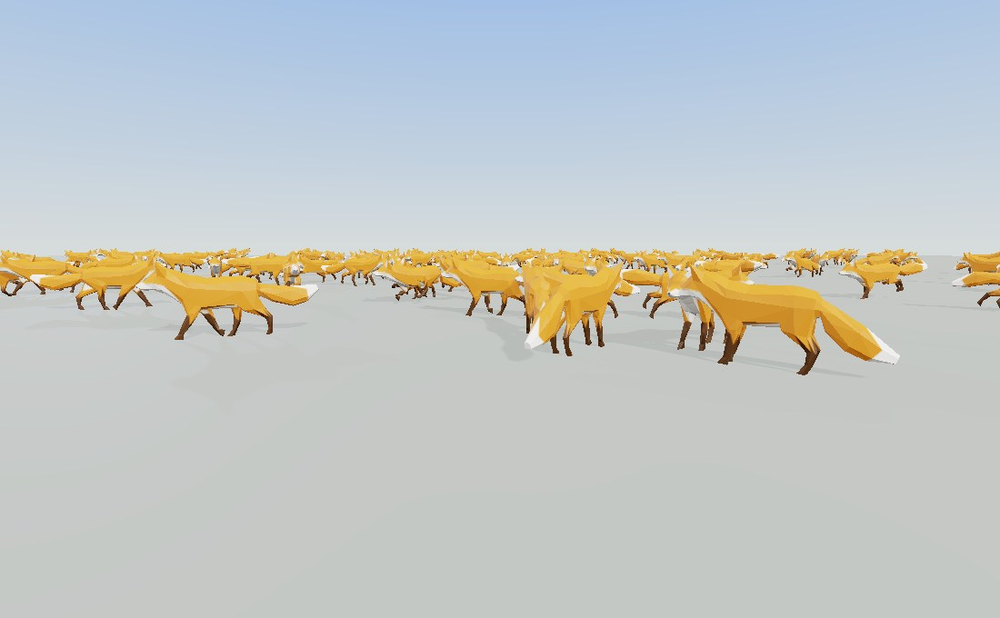

A glTF file carries a skeleton
and a set of animation clips. OpenGLContext.character is what a
game needs on top of that: which joint is which bone, more than one clip
playing at once, and somewhere to hang a weapon.
from OpenGLContext.character import CharacterModel
model = CharacterModel.load('marine.glb')
model.attach('grip', load_gltf('handgun.glb').group)
model.play('run', fade=0.2)
model.layer('upper', mask=model.mask('spine')).play('fire', loop=False)
...
model.update(dt) # once a frame
scene.children = [model.group] # the renderable rootEach of the three pieces is usable on its own; the model is the three of them over one loaded document, which is what most callers want.
OpenGLContext.character.humanoid maps a document's nodes onto
the humanoid bone vocabulary of VRM 1.0 — the
fifty-five names in VRMC_vrm.humanoid.humanBones, their required
subset and their fixed parent chain. A vocabulary an avatar toolchain already
knows is a vocabulary an asset can arrive carrying.
Three sources are consulted, in order:
VRMC_vrm, where the file states its own bone map. Nothing
guesses over an answer the file gives.VRMC_vrm_animation, the same map in a clip-only document
(.vrma).mixamorig:LeftForeArm,
forearm.R, lowerarm_r and arm_joint_L_2
all resolve.Where one name alone is ambiguous, the rig is recognised instead.
Unreal's mannequin numbers its spine from one, so spine_01 is the
first segment; Mixamo numbers from zero, so Spine1 is the
second. Nothing about either name says which, and a rig read the wrong
way puts its chest where its waist belongs. A skeleton is therefore matched
against the families in humanoid.FAMILIES first — a set of names a
rig carries all of, such as pelvis with clavicle_l
beside it — and read from that family's own table where it matches. A model
from a family nobody has written down still resolves name by name.
from OpenGLContext.character import Humanoid
human = Humanoid.from_scene(scene) # None if no bone resolves at all
human.complete # every required bone is here
human.missing # the ones that are not
human.transform('rightHand') # the scenegraph node for a joint
human.position('head') # where it is, as posed now
human.mask('spine') # the upper body, as node indices
human.mask('hips', exclude=('spine',)) # the restA name that needs a side and carries none — a bare UpperArm —
is not a bone, because guessing which arm it is would be guessing.
glTF stores clips and says nothing about playing two of them together.
OpenGLContext.character.mixer is that: cross-fades, layers masked
to part of the body, and additive layers. None of it is specific to a humanoid
— it blends node transforms and morph weights, whatever the model is.
A layer is a channel of animation with a mask (the node indices it
may move) and a weight. Layers apply in the order they were created, each
blended over the pose built so far, so a base layer walks the whole body and an
upper layer masked to the arms writes over it for those joints
only.
Playing a clip fades the layer's previous clip out over the same interval. Where a layer's weights do not add up to one — a clip fading in with nothing to fade out of — the shortfall is taken from the pose underneath, so a layer eases in from the layer below rather than from nothing.
An additive layer measures its clip against a reference frame of that clip (frame zero by default) and adds what the difference comes to. A 20-degree recoil authored once reads as 20 degrees on top of any aim.
mixer = AnimationMixer.from_scene(scene)
mixer.play('run', fade=0.25) # the base layer
mixer.layer('upper', mask=human.mask('spine')).play('fire', loop=False)
mixer.layer('recoil', additive=True).play('kick', loop=False)
mixer.update(dt) # once a frame
mixer.playing # what is contributingPlaying the clip that is already playing keeps its clock, so asking for the
same clip every frame — which is what a state machine does — costs nothing and
does not stutter. restart=True rewinds it instead. A looping track
wraps; a one-shot holds its last frame and reports
track.finished.
The arithmetic is per node and per animated path, so a mask, a layer weight
and a cross-fade compose without any of them knowing about the others.
mixer.apply() poses the model without advancing time, which is what
a capture or a paused game wants.
mixer.reset() stops every layer at once and writes the rest pose
back. What needs it is a respawn: being dead is a state a body is held
in, so something has to say it is over — and a fade would blend out of dying
into whatever comes next, which is a body easing back onto its feet.
glTF needs no extension for holding things. A node parented to a joint already inherits that joint's animated transform, so an empty node under the joint, named for what it holds, is an attachment point in the format's own terms — it survives every exporter, importer and validator, because it is nothing but a node.
OpenGLContext.character.attachment reads the convention of a
name prefix, socket_ by default: a node called
socket_grip under the right hand is the point called
grip.
model.point('grip') # the Transform to mount on
model.attach('grip', weapon) # None if the model has no such point
model.detach('grip', weapon)point() looks for a declared attachment point first and falls
back to a humanoid bone of that name, so attach('rightHand', weapon)
works on a model that was authored without a grip point — at the joint rather
than at a grip an artist placed, which is the difference the named point
buys.
Which way a mounted model faces is the model's convention, not something this decides: the point is a node with an orientation, and what hangs on it arrives in that node's space.
A rig's socket_grip says where a thing goes. A node of
the same name inside the thing says where it is held — the grip its own
artist put on it, rather than wherever its origin happens to sit.
mounted() lines the two up:
from OpenGLContext.character.attachment import mounted, sockets
weapon = load_gltf('sniper-rifle.glb')
attach(sockets(scene)['grip'], mounted(weapon, 'grip'))Without it, a rifle whose origin is at its balance point hangs off a fist by that point, fifteen centimetres from the hand, and every game that loads it needs a table of per-model offsets to put it right. With it the fact lives in the model, stated once, and a re-modelled weapon does not move the hand that holds it.
A model may declare several — socket_grip for the hand,
socket_back for how it stows — and the one that is read is the
point it is going on, so one file hangs correctly in both places. A model that
declares none is mounted by its own origin, which is what everything did before
it could say otherwise.
Both halves are ordinary named nodes. glTF has no extension for
attachment points: the Khronos registry has none ratified, in progress
or vendor-supplied, and neither has OMI's set, whose OMI_seat is
the nearest thing and is about seating an avatar. There is nothing to adopt and
nothing to invent — a node in the hierarchy is what the format already offers,
and it survives every exporter, importer and validator because nothing about it
is an extension.
A figure's pose is a few dozen rows of arithmetic — sample the clips, blend them, compose the skeleton, build the joint matrices — and on a few dozen rows almost all of what a numpy call costs is setting the call up. Posing two hundred and fifty figures one at a time therefore costs two hundred and fifty times that set-up and barely more arithmetic than posing one.
OpenGLContext.character.crowd.Crowd does the work for every
figure it holds in one pass. Hand it the models instead of updating each one:
from OpenGLContext.character.crowd import Crowd
crowd = Crowd()
for model in cast:
crowd.add(model)
...
crowd.update(dt, mode=context) # once a frame, instead of model.update(dt)Every figure in a crowd must come from one loaded document,
so that a joint means the same joint in all of them; add refuses a
figure whose skeleton is laid out differently. Load one document with
parse_gltf and build each figure from it with
load_gltf(document=…) — see the loader — and
they will share their vertex and keyframe data as well.
Figures doing the same kind of thing — the same layers, the same
masks, the same number of clips, whatever their weights and wherever their
clocks stand — are answered together; a figure doing something no other figure
is doing costs what it always did. Cross-fades, masked layers and additive
layers all batch: what a crowd does is not an approximation of what
model.update(dt) does, it is the same arithmetic with a figure
axis on it, and the tests hold the two to each other.
A character usually ships twice: the mesh it is seen with and a lighter one exported from the same armature. Both are the same body, so the skeleton, the clips and the pose are one thing computed once, and only the geometry differs:
model = CharacterModel.load('marine.glb')
model.add_level('marine_lod1.glb', 25.0) # lighter beyond twenty-five metresThe coarser document's meshes are handed to the skins that are already being
posed and both go under a VRML97 LOD, so the renderer draws
whichever the distance calls for and a crowd batches by whichever level each
figure is showing — the near ones in one instanced draw and the far ones in
another. The two levels share one range of the joint palette, because what they
are handed is the same matrices.
A level whose skeleton is not the model's, joint name for joint name, is refused with a warning rather than adapted: a coarse mesh posed by the wrong bones is worse than a fine one drawn at distance.
A crowd where every figure plays the same clip from the same clock is one
figure drawn many times. OpenGLContext.character.wander is what
makes it a crowd of individuals — each body somewhere else, facing somewhere
else and part way through something else — while the renderer goes on drawing
all of them in one call:
from functools import partial
from OpenGLContext.character.wander import Gait, WanderingCrowd
crowd = WanderingCrowd((-13.0, 13.0, -19.0, -0.5), # the ground they keep to
speed=(0.55, 1.65), scale=0.008,
gait=partial(Gait, walk='Walk', run='Run', idle='Survey',
walk_stride=0.82, run_stride=1.38))
for _ in range(150):
model = CharacterModel(load_gltf(document=document))
scene.children.append(crowd.add(model)) # the Transform to mount it by
...
crowd.update(dt, mode=context) # once a frame: move, then poseEach figure walks for a while, comes to a halt, does something while it is
stopped, turns towards somewhere else and sets off again; how long each of those
lasts, how fast it travels and which way it turns come per figure out of a named
entropy stream, so a session run again with the same
OPENGLCONTEXT_SEED plays out the same
way. A figure that reaches the edge of the field turns back inwards rather than
wandering off.
Gait puts the model's clips in three layers — the idle
underneath, the walk and the run over it — and what a figure shows is its own
weights on them. A body at half speed is a blend of the idle and the walk; one
picking up speed is a blend of the walk and the run; one that has stopped is the
idle alone. That is the per-figure blending a crowd exists to do, and because
the crowd gathers figures by the shape of the work rather than by the
weights, a field spread right across that range still costs a handful of runs
rather than one per body.
A model carrying more than one idle is given all of them, and a figure steps on to the next each time it comes to a halt — so a body that stops twice does two different things, and over a field every idle gets shown. Tell the crowd how many there are so it can spread them:
WanderingCrowd(bounds, actions=3,
gait=partial(Gait, walk='Walk', idle=['Survey', 'Sniff', 'Shake']))A figure travels along its heading, and heading is measured from
+Z — rotation=(0, 1, 0, heading) applied to +Z is
where it goes. A model authored facing the other way is turned round once, with
WanderingCrowd(..., facing=math.pi), rather than by bending the
arithmetic around it.
That and each clip's stride come off one measurement: play the clip and watch what is touching the ground. It travels backwards under the body at the speed the clip is carrying the body forward, so its velocity is the stride and its direction is the model's forward. The strides settle two things at once — how fast to run each clip's clock for the speed a body is actually travelling at, so the feet stay on the ground, and where the crossover from walking to running falls.
Guessing either is what makes a crowd moonwalk, the bodies sliding
along while their legs stride the other way, and it does not show in a still
frame, because a stride looks the same forwards and backwards until something
moves. tests/unit/test_character_wander.py holds the demo's numbers
to it: what is on the ground must not travel over it. Reading the posed mesh
rather than a foot bone, so it works on a quadruped as readily as on a figure
with a humanoid skeleton.
Wander underneath is a state machine over arrays with a figure
axis on it, in the manner of the posing above: it holds no clips, no scenegraph
and no GL, and a hundred and fifty figures cost about 0.05 ms a frame
between them. It reports which figures a step actually
walked and which it turned, and only those are written
back to the scenegraph — a figure walking straight ahead does not turn and a
standing one does not move, and setting a field on a node that has not moved is
by far the largest thing in placing a crowd.
The largest single lever a crowd has is not posing bodies nobody can see the
difference on. update takes a budget — how many
figures to bring up to date this frame, taken in turn so none is starved — and
each member has a rate in poses per second:
member = crowd.add(model, rate=10.0) # ten poses a second, not sixty
crowd.update(dt, budget=80) # at most eighty figures this frameClocks always run. A figure posed every third frame is where its clip says it is when its turn comes, not three frames behind; what a budget or a rate saves is the pose, not the playback.
Setting those rates from how far each figure is from the eye is what a
WanderingCrowd does for a field that moves — and which figures are
near changes every frame once they walk:
crowd.schedule(context.platform.position,
((8.0, 0.0), # inside eight metres, every frame
(20.0, 12.0), # out to twenty, twelve poses a second
(float('inf'), 4.0))) # beyond that, fourThe crowd also says how many runs of arithmetic its last update
took, one per set of figures doing the same kind of thing:
crowd.groups. It is the number that says whether a crowd is
gathering — a hundred and fifty figures in three runs cost three set-ups, and
in a hundred and fifty runs cost a hundred and fifty of them.

python tests/crowd_demo.py — a
hundred and fifty copies of one rigged glTF model, each crossing the field on
its own, posed by a single Crowd and drawn as one instanced call.
Press s to turn the distance scheduler off and on and watch how
many figures the frame has to pose; b caps the count at eighty a
frame. The model is Fox from the Khronos sample catalogue —
twenty-six joints and three clips — fetched once into the on-disk asset
cache.What it prints every sixty frames, from the camera it opens at:
150 figures scheduler ON posed 37.5 of 150 per frame, in 3 runs
87 walking, 31 running, 4 turning, 28 standing
96 shapes -> 2 draws (95 instanced in 1 group)
The shader skins the bodies, so all hundred and fifty hold the same rest-pose vertices and collapse into one instanced draw; the second call is the ground. The shadow pass batches them the same way and reads the same joint palette, so each body's shadow is of the pose it is in. Of the 151 shapes in the scene, 96 survive frustum culling at that moment. With the scheduler off every figure is posed every frame, the count reads 150.0, and the picture is the same one.
What an application writes to build a crowd from one loaded model, without the wandering:
from OpenGLContext.character.crowd import Crowd
from OpenGLContext.character.model import CharacterModel
from OpenGLContext.loaders.gltf import load_gltf, parse_gltf
from OpenGLContext.scenegraph.basenodes import Transform
document = parse_gltf('marine.glb') # parsed and decoded once for all of them
crowd, children = Crowd(), []
for index in range(150):
figure = CharacterModel(load_gltf(document=document))
figure.play('walk')
# a different point in the stride, so no two walk in lockstep
figure.mixer.layers[0].tracks[0].time = (index * 0.131) % 2.0
crowd.add(figure, rate=12.0 if index > 40 else 0.0)
children.append(Transform(translation=(index % 15 - 7.0, 0, -(index // 15)),
children=[figure.group]))
...
crowd.update(dt, mode=context) # once a frame, for all of themLinear-blend skinning is the same short sum for every vertex of a body — four
joint matrices, weighted. Done in the vertex shader, the only
thing that crosses the bus per frame is the joint palette: one matrix per joint,
a few kilobytes for a crowd rather than a few megabytes of deformed vertices.
This is on by default; OPENGLCONTEXT_GPU_SKINNING=0 (or the
gpuSkinning setting) puts the deform back on the CPU, which is the
reference the shader path is measured against and the path taken on a driver
with no texture unit to spare for the palette.
A consequence worth knowing: the vertex arrays of a mesh the shader skins hold the rest pose for the life of the context. A caller that wants the posed vertices — to measure a reach, to test a pose — asks for them:
mesh.posed_positions() # where the pose put them, whichever side skinsBounds are worked out from the joints rather than from the rest vertices, so a figure whose animation carries it outside where it was modelled is still bounded where it is.
Where the driver has compute shaders — ARB_compute_shader, which
many GL 3.3 drivers expose — a crowd composes the skeletons and the
palettes on the GPU too: per frame it uploads the pose, forty-eight
bytes a joint, and two dispatches write the palettes straight into the buffer
the skinning shader reads. Nothing is read back.
OPENGLCONTEXT_GPU_SKELETON=0 keeps that arithmetic in numpy, which
is what happens anyway on a driver without compute; the two agree to single
precision, which is what the palette is stored in either way.
And the clips themselves: a figure playing straight clips
with nothing hung on its joints has its whole pose worked out there, from the
keyframes up. The build's clips are uploaded once and the frame sends only what
each figure is playing — a clip, a time and a weight per track, sixteen
bytes — so two hundred and fifty figures cost about a millisecond of
processor time between them. All three of glTF's interpolations are read, the cubic one included. A figure
doing more than straight clips (a masked or an additive layer, morph weights,
or a weapon on a joint whose transform something reads) is blended in numpy
instead, which is the same
answer more slowly; OPENGLCONTEXT_GPU_BLEND=0 asks for that
everywhere.
Figures of one build that share their rest-pose geometry are drawn as a single instanced call, each instance naming its own range of the palette, so a crowd is a handful of draws rather than one per body.
Measured on an RTX 3060 Ti, rendering offscreen: fifty-seven-bone rigs, about four thousand skinned vertices and twenty-three clips each, every figure on its own clock and all of them on screen.
| Figures | Animation | Drawing | Frame |
|---|---|---|---|
| 100 | 0.8 ms | 2.7 ms | 283 fps |
| 250 | 1.3 ms | 6.8 ms | 124 fps |
| 500 | 2.4 ms | 14.1 ms | 61 fps |
The drawing column at these counts is mostly the GPU filling pixels — every
figure is on screen and large — rather than work the engine is doing: the
processor-side cost of a 250-figure frame is 12 ms of the 20. The benchmark is
tests/helpers/_crowd_perf_harness.py, which takes a figure count
and reports the split.
oglc-character-sheet renders a model's clips as contact sheets —
one sheet per clip, a row for each of four views, a column for each moment of
the clip, the last column its end. A bad silhouette, a foot through the floor
or an arm through the ribs is obvious on a page and invisible while scrubbing
one clip at a time.
oglc-character-sheet marine.glb --out sheets/
oglc-character-sheet marine.glb --out sheets/ --clips walk,run --phases 8
oglc-character-sheet marine.glb --out sheets/ --hold grip=handgun.glb--hold mounts a model on an attachment point, so a firing
animation is reviewed with the weapon in it. An overview sheet and
an index.html come with the rest, so the whole set reads down one
page.
Everything is drawn through the ordinary PBR pass into a hidden window, so what lands on the sheet is what a game gets.
Nothing here requires a particular clip vocabulary — the names a game asks for are the game's own. What a model does need is a skeleton whose joints resolve (§ Which joint is which bone), clips whose loops close and whose one-shots end in the pose the game will hold, and an attachment point for anything it is meant to carry.
twig-bb's CHARACTER-RIG.md is a worked example of such a
contract, and grass-clumps/character.py in the same workspace is a
generator that satisfies it.